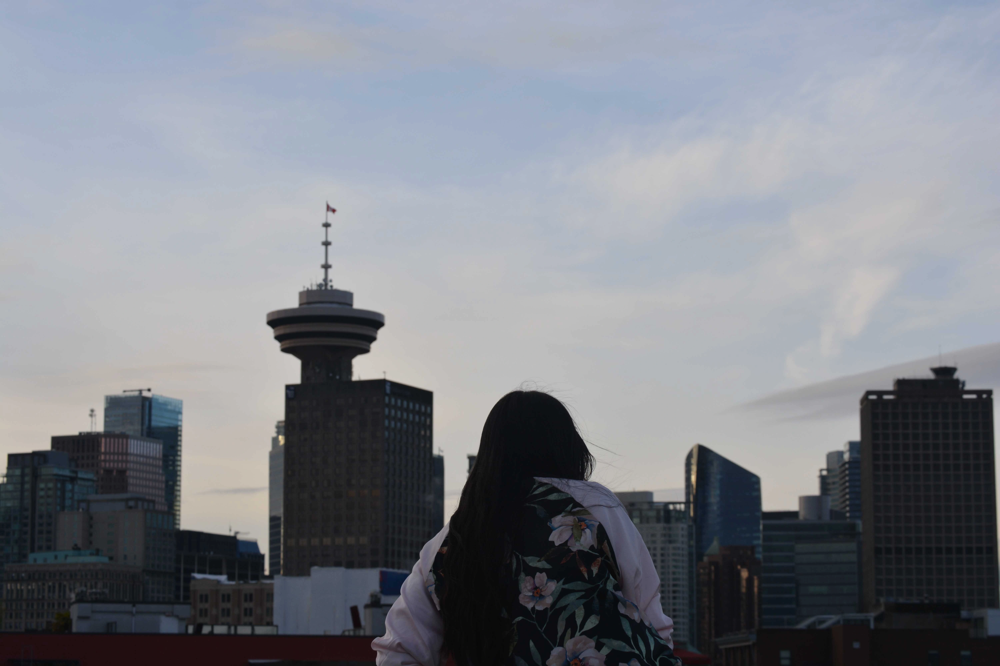
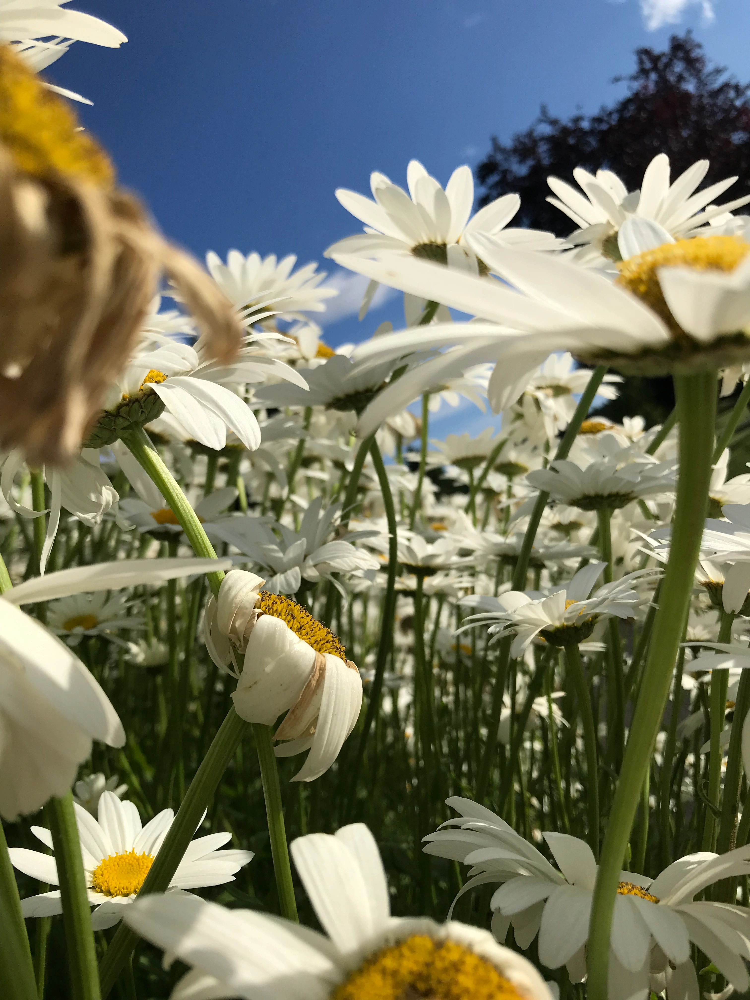
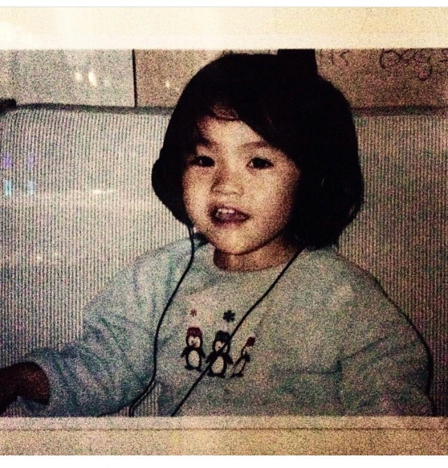
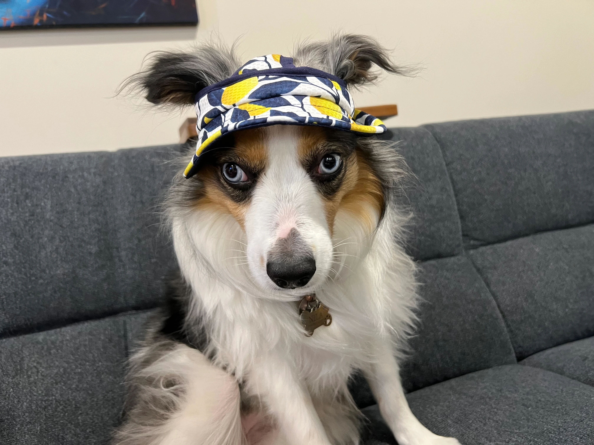
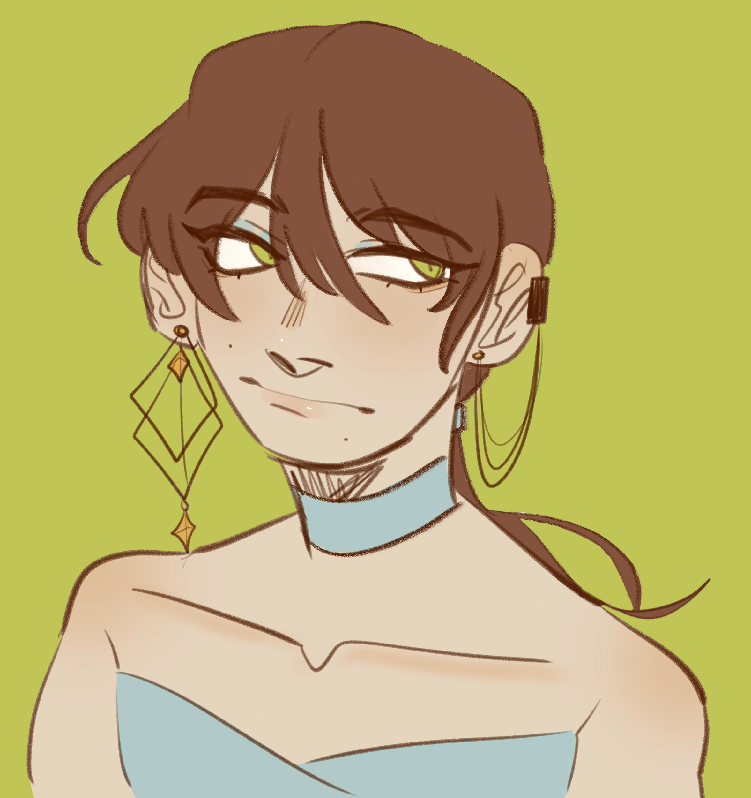

Hulloooo~
I’m a Vancouver-based graphic designer with a background in illustration and a strong interest in visual storytelling.
My Background
I was initially drawn to photography and animation, but over time I found myself gravitating toward graphic design as a way to combine creativity with clear communication. It felt like a natural fit for building ideas visually while creating work with real-world applications.
Growing up, I spent a lot of time drawing and got especially inspired by anime, which pushed me toward a more anime or cartoonish illustrative style. I also experimented with video editing early on, putting together small clips and music — which is where my interest in storytelling really started.

A daisy!
My design approach often begins with colour, followed by typography and composition. I enjoy creating visuals that feel engaging and intentional, whether through digital graphics, layout design, or motion. I’m particularly interested in developing my skills in branding and creating work that translates well across different platforms.
What I Do
Layout & Composition
Typography
Branding & Visual Identity
Illustration
Motion Graphics
Visual Storytelling

Baby Kaila
Tools I Use
Illustrator
Photoshop
InDesign
After Effects
Premiere Pro
Clip Studio Paint
Procreate
Figma

Woof Woof

Art Time!
My inspiration doesn't have an 'off' switch. I spend my free time exploring a wide range of media, from the expressive curves of classic aesthetics to the bold energy of modern experimentation.
Whether I'm getting lost in a new anime series or letting a wide-ranging playlist set the mood, I’m always looking for that next spark of visual magic that feels both handcrafted and fresh.